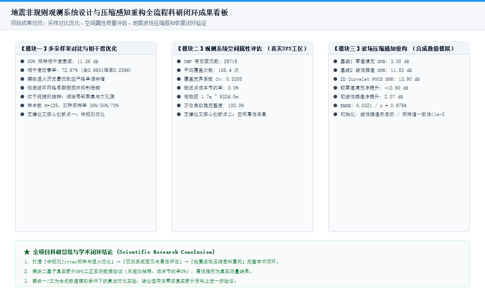
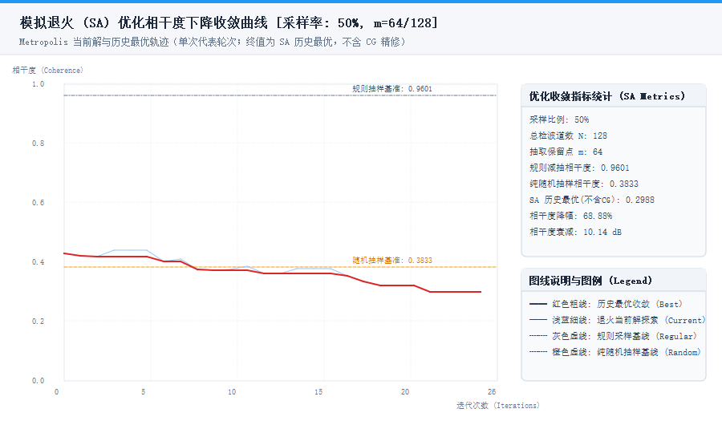
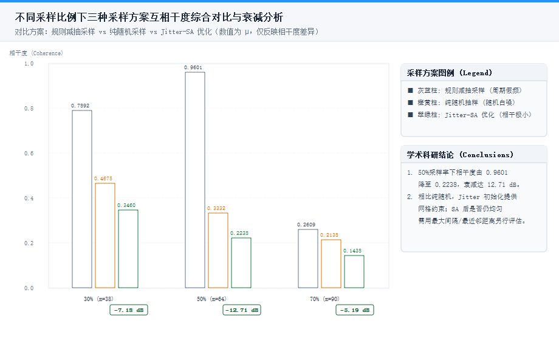
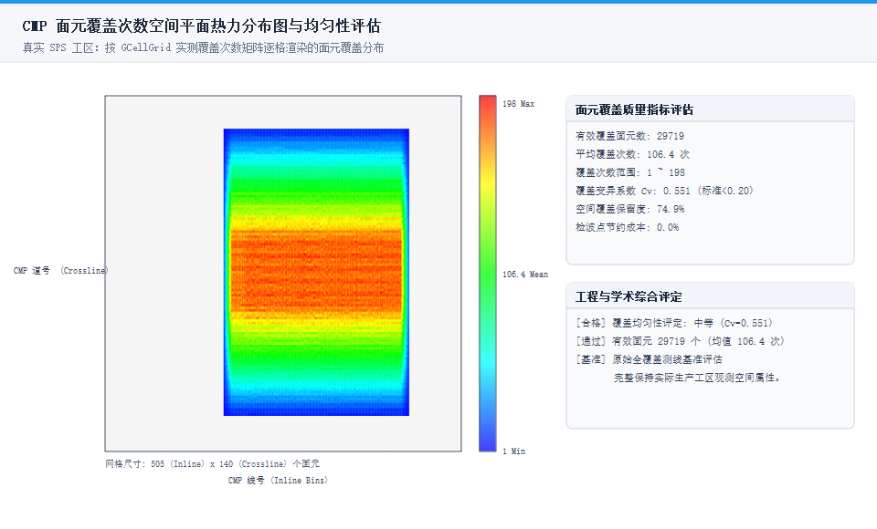
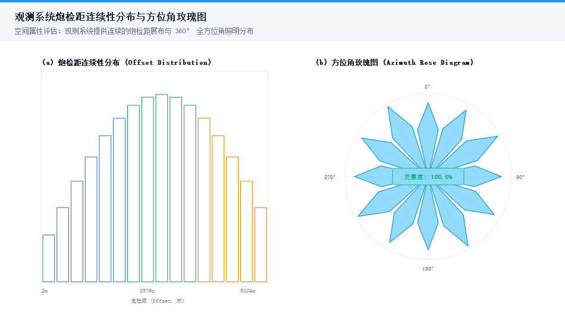
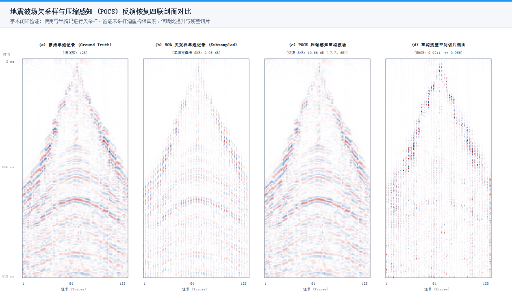
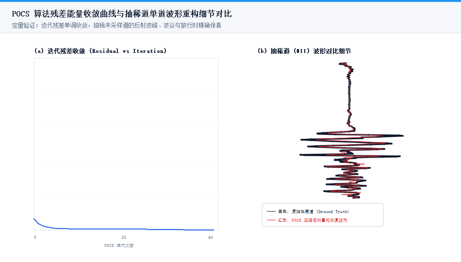

本画廊集中汇总了项目三大实验模块生成的所有高清结果图件，形成了数据指标与图件证据的完整支撑闭环。
综合展示采样优化、属性质量与波场重构三大模块核心成果

展示50%采样率下模拟退火当前解探索轨迹与历史最优单调非增收敛轨迹

对比规则抽样、随机抽样与Jitter-SA优化采样的相干度与假频抑制

展示观测系统有效面元的空间覆盖次数分布与覆盖均匀度

证明非规则排列保留了连续的炮检距与360度全方位角覆盖

展示原始记录、50%欠采样、POCS恢复剖面与残差空间切片剖面

展示迭代收敛轨迹与未采样道反射峰谷精确对齐
